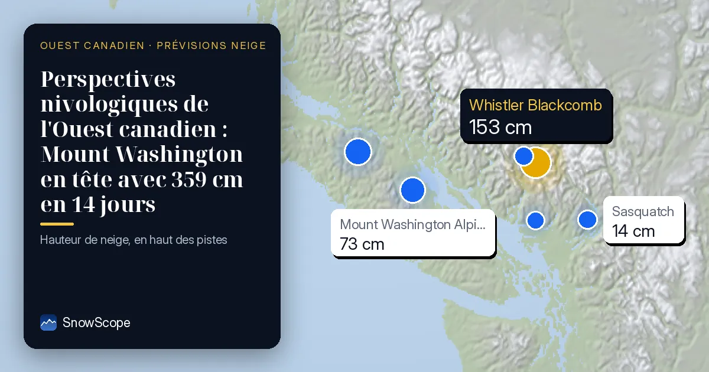
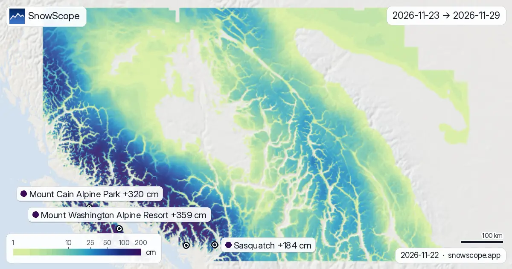
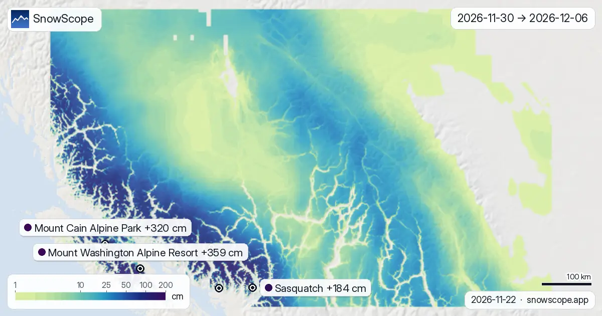

Perspectives nivologiques de l'Ouest canadien : Mount Washington en tête avec 359 cm en 14 jours
Mount Washington Alpine Resort domine les perspectives nivologiques de l'Ouest canadien, SnowScope prévoyant 359 cm de neige nouvelle sur les 14 prochains jours. La première semaine apportera la moitié de ce total, les tempêtes les plus fortes frappant fin novembre.
Consultez les prévisions neige en temps réel pour Mount Washington Alpine Resort sur l'application SnowScopeHauteurs de neige, alertes poudreuse et carte 3D, gratuitement.
Quelles stations recevront le plus de neige
Mount Washington en tête de région avec 359 cm attendus d'ici le 6 décembre, suivi de Mount Cain Alpine Park avec 320 cm. Les deux stations se situent autour de 1 500 m et captureront l'humidité des tempêtes du Pacifique. Whistler Blackcomb, à plus haute altitude (2 259 m), prévoit 222 cm en raison des effets orographiques favorisant les pentes inférieures dans ce régime. Les stations moins élevées comme Sasquatch et Mt Seymour reçoivent moins, environ 167-184 cm, car elles se situent sous la zone des précipitations les plus importantes.
L'incertitude est réelle. L'intervalle pour Mount Washington est de 200 à 518 cm ; celui de Mount Cain est de 166 à 474 cm. Ces marges reflètent la difficulté de prévoir les trajets et l'intensité des tempêtes deux semaines à l'avance.
| Station | Hauteur de neige | Neige fraîche, 72 h | Attendu, jours suivants | Sommet |
|---|---|---|---|---|
| Mount Washington Alpine Resort | 73 cm | 9 cm | 121 cm | 1 569 m |
| Mount Cain Alpine Park | 92 cm | 2 cm | 132 cm | 1 616 m |
| Whistler Blackcomb | 153 cm | 5 cm | 101 cm | 2 259 m |
| Sasquatch | 14 cm | 2 cm | 27 cm | 1 316 m |
| Mt Seymour | 11 cm | 4 cm | 19 cm | 1 255 m |
| Ski Callaghan | 16 cm | 3 cm | 54 cm | 998 m |

Quand la neige tombe : la première semaine domine
La moitié de toute la neige arrive la première semaine (23-29 novembre). Mount Washington verra 233 cm à ce moment, son jour le plus chargé étant le 24 novembre (77 cm). Mount Cain culmine le même jour avec 62 cm. Cette rafale concentrée est entraînée par un puissant système du Pacifique se déplaçant en milieu de semaine.
La deuxième semaine (30 novembre au 6 décembre) apporte la moitié restante. La neige est répartie plus finement sur les jours individuels, mais un autre pulse frappe autour des 3-4 décembre et à nouveau le 6 décembre. À Mount Washington, le 6 décembre livrera 42 cm alors qu'un système pousse en fin de période.

Neige par altitude : la bande 1 500-2 000 m idéale
Sur tout le terrain de l'Ouest canadien, la bande 1 500-2 000 m reçoit le plus de neige sur les 14 jours : une médiane de 26 cm et jusqu'à 44 cm dans certaines zones. C'est là que se situent les stations, ce qui explique les bonnes performances de Mount Washington et Mount Cain. Au-dessus de 2 500 m, les totaux chutent à 16-20 cm de médiane, l'air froid et sec devenant dominant. En dessous de 1 000 m, seulement 10 cm de médiane tombe, et aux basses altitudes la pluie peut se mélanger.
Environ 198 000 km² du terrain montagneux régional recevront 20 cm ou plus. Quelque 76 600 km² verront 50 cm ou plus, principalement entre 1 500 et 2 000 m d'altitude. C'est l'eau stockée dans le manteau neigeux pour les rivières et les réservoirs en aval.

Ce qu'il faut observer dans les jours à venir
Les trois premiers jours (23-25 novembre) donnent le ton. Si le système du Pacifique se déplace plus au nord ou au sud que prévu, les stations verront des totaux sensiblement différents. La prévision 11 jours de Mount Washington affiche 121 cm, mais cela exclut les jours 12-14 et repose sur un timing des tempêtes que SnowScope affine encore.
La neige en début de saison aux basses altitudes peut être mince ou reposer sur un sol mouillé. Les affleurements rocheux sur les pentes raides de Sasquatch et Mt Seymour (tous deux sous 15 cm aujourd'hui) pourraient rester exposés même après les premières tempêtes. Le terrain à mi-montagne de Mount Washington et Mount Cain devrait construire une base utilisable fin novembre si la prévision se vérifie.
Conseils aux skieurs
- Observez la tempête du 24 novembre. Mount Washington et Mount Cain verront probablement la neige la plus fiable du début de saison à ce moment ; planifiez votre première visite autour de ce pulse si les conditions permettent de skier.
- Visez les pentes supérieures au-dessus de 1 500 m la première semaine pour la neige la plus profonde. Les altitudes inférieures et les stations moins élevées accuseront un retard de 50 cm ou plus.
- Fin novembre offre une meilleure épaisseur de neige qu'début décembre. La neige de la deuxième semaine est plus légère et plus dispersée ; n'attendez pas après le 1er décembre si vous voulez du powder en début de saison.
- Consultez les bulletins d'avalanche officiels si vous vous aventurez hors-piste, particulièrement après le dump du 24 novembre quand la stabilité des pentes sera en question.
- Réexaminez cette prévision en milieu de semaine.
À propos de ces chiffres
Les hauteurs de neige des stations sont la neige la plus épaisse sur le haut du domaine à la date indiquée ; ce sont des estimations pour une zone, pas une mesure en un point. Les prévisions peuvent changer. Consultez toujours le bulletin d'avalanche officiel avant le hors-piste.
Bulletins d'avalanche officiels: Avalanche Canada
Citer ce bulletin
Pour la recherche, l'enseignement ou la presse : chiffres et graphiques réutilisables librement sous CC BY 4.0 avec cette citation.
SnowScope (2026), Perspectives nivologiques de l'Ouest canadien : Mount Washington en tête avec 359 cm en 14 jours, https://snowscope.app/blog/fr/2026/11/western-canada-2-week-snow-forecast-maps-22-november-2026.html, consulté le 2026-11-22
SnowScope (Atlas Labs). (2026, November 22). Perspectives nivologiques de l'Ouest canadien : Mount Washington en tête avec 359 cm en 14 jours. SnowScope snow reports. https://snowscope.app/blog/fr/2026/11/western-canada-2-week-snow-forecast-maps-22-november-2026.html
BibTeX
@misc{snowscope2026westerncanada2weeksnowfo,
author = {{SnowScope (Atlas Labs)}},
title = {Perspectives nivologiques de l'Ouest canadien : Mount Washington en tête avec 359 cm en 14 jours},
year = {2026},
month = nov,
howpublished = {\url{https://snowscope.app/blog/fr/2026/11/western-canada-2-week-snow-forecast-maps-22-november-2026.html}},
note = {Published 2026-11-23 00:50 UTC; accessed 2026-11-22}
}· CC BY 4.0 · Méthodes, données et outils →
Suivre Mount Washington Alpine Resort
Gratuit : un message quand la neige arrive, et la météo chaque matin.
Autres bulletins neige

SnowScope classe Whistler Blackcomb premier dans l'Ouest canadien aujourd'hui, avec environ 153 cm sur le haut du domaine, devant Big White …

Whistler Blackcomb affiche 136 cm en versants supérieurs cette fin de semaine, mais l'épaisseur diminue rapidement sous 1500 m. Planifiez vos descentes selon l'altitude. Données du 19 novembre.